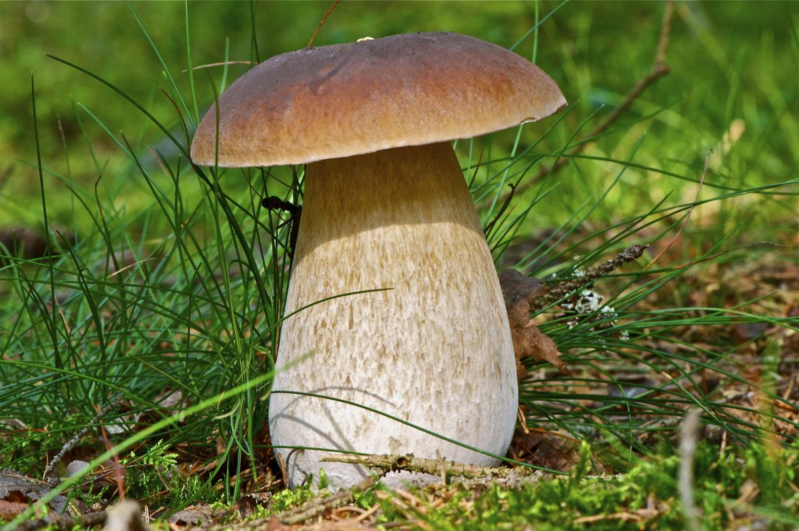
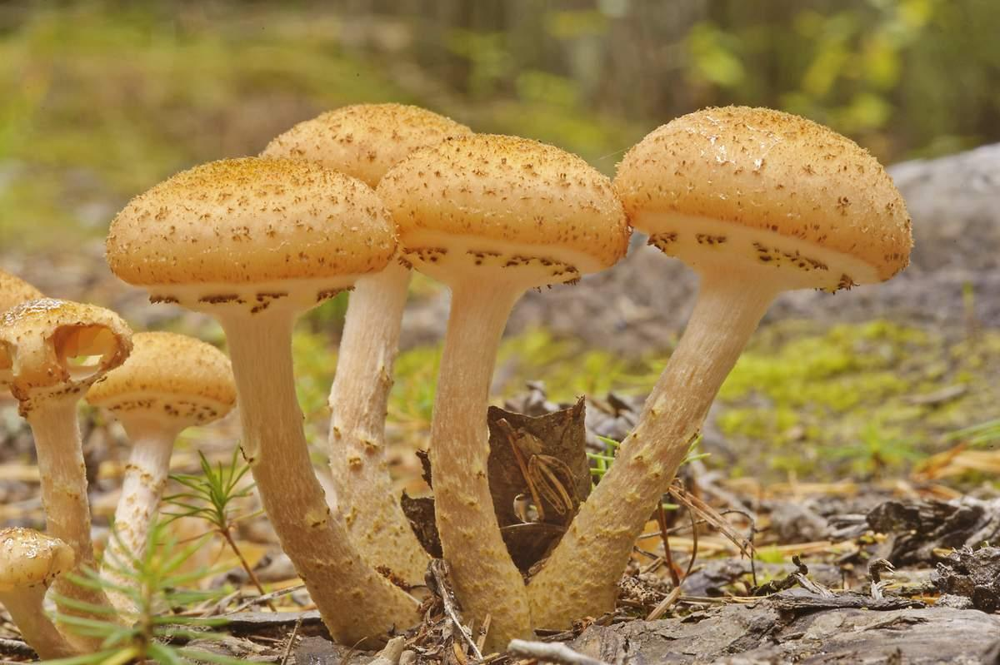
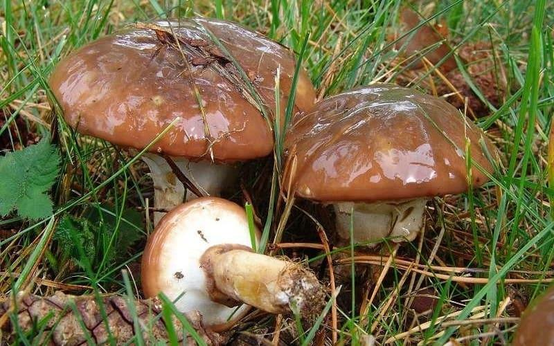
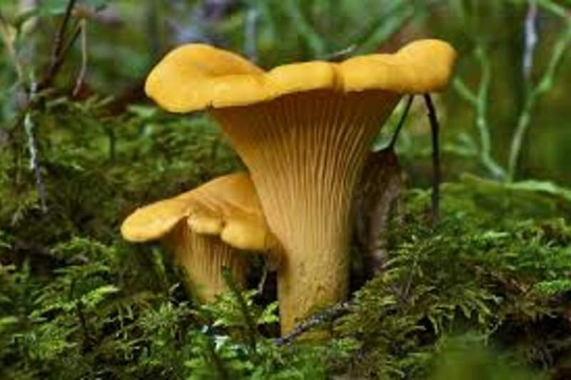
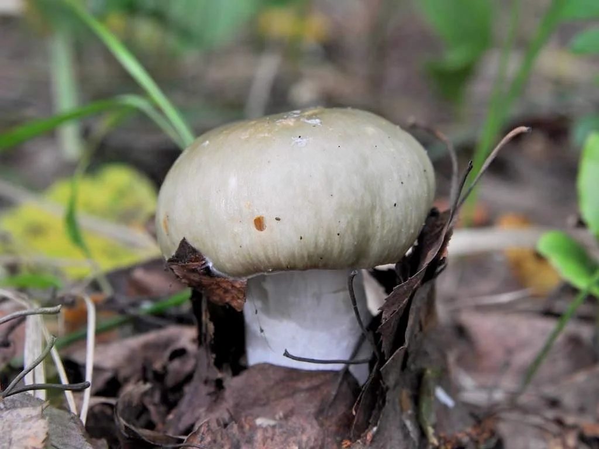
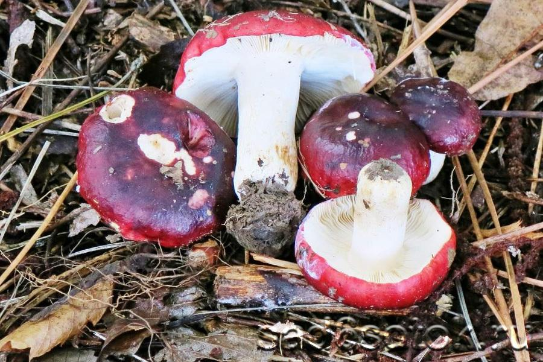
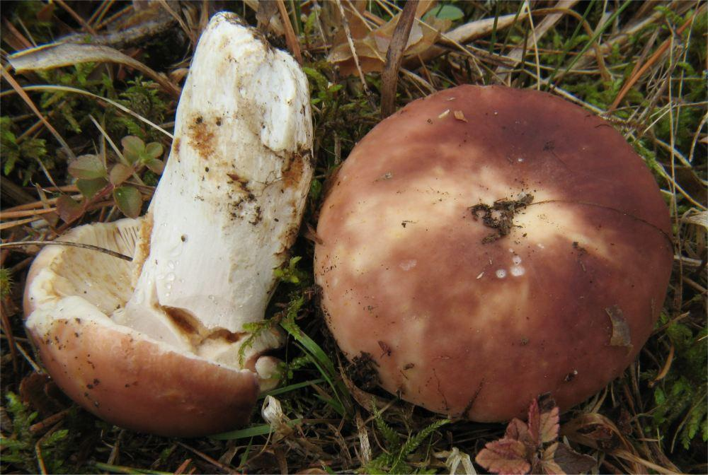

Їстівні гриби: найпопулярніші види
Слід чітко знати характерні ознаки найбільш поширених їстівних грибів, щоб не сплутати їх із неїстівними. Є певні найвідоміші їстівні грибами, що становлять особливу цінність для грибників.
Білий гриб
Колір шапки білого гриба може бути різноманітним – від червонувато-коричневого до майже молочно-білого. Зовні вона переважно приємна на дотик, має злегка бархатисту фактуру, верхня шкірка щільно пов'язана з м'якоттю, тому складно від неї відділяється.
Ніжка у цього гриба бочкоподібна, а у старих – вона циліндрична і товста, може бути білого або насичено коричневого кольору.
М’якоть щільна й соковита, здебільшого м’ясиста. Зріз не змінює колір і залишається білим.
Опеньок
Часто ці гриби розташовуються на пеньках у вигляді кільця.
У опенька гнучка, тонка, часом досить довга ніжка (може досягати 12-15 см), колір якої варіюється від світло-медового до темно-коричневого тону. Ніжка у багатьох опеньків «вбрана» у кільце-спідничку.
Шапочка у опенька витончена пластинчаста, зазвичай закруглена донизу. Її відтінок різний – від кремового або жовтуватого кольору до червонуватих тонів.
Маслюк
Шапка у молодих грибів має напівкулясту, іноді конічну форму. Її покриває блискуча липку шкірка, що покриває капелюшок, через яку здається, ніби гриб зверху змазаний олією. Вона може бути слизькою постійно або тільки під час сирої погоди.
Ніжка у маслюків циліндричної форми. Колір білуватий з темним низом або збігається з кольором капелюшка.
Лисичка
Шапка і ніжка лисичок є одним цілим, без видимих меж, навіть колір приблизно один: від блідо-жовтого до помаранчевого.
Їхня шапка неправильної форми, плоска, з загорнутими, розпростертими хвилястими краями, увігнута або вдавлена всередину, у деяких зрілих особин буває лійкоподібною.
М'якоть лисичок м'ясиста і щільна, волокниста в ділянці ніжки, білого або жовтуватого кольору, має кислуватий смак і слабовиражений запах сухофруктів. Під час натискання поверхню гриба стає червоною.
Сироїжка
Рід сироїжок включає в себе не один десяток видів різноманітного забарвлення – від червоного, коричневого, зеленого до жовтого і білого. У них ламка біла м'якоть і світлі пластинки. Завдяки зовнішній різноманітності у них є дуже небезпечні неїстівні двійники.
Сироїжка зелена
Шапка широка, спочатку округла, потім розпростерта, діаметром до 18 см. Шкірка зеленувата, бліда, в центі буро-зелена, легко знімається.
Ніжка щільна, світло-кремова, гладенька, без потовщень. М'якоть біла, ламка, з прирослими до ніжки кремовими частими пластинками.
Сироїжка хвиляста
Шапка напівшаровидна до 6-10 см діаметром, у старих грибів розпростерта, при цьому краї залишаються загнутими і незначно хвилястими. Помітна здалеку завдяки червоним тонам – червоно-бордовим у центрі і трохи світлішим по краях.
Ніжка правильної циліндричної форми, кремово-білого кольору, в посушливу погоду набуває рожевого відтінку.
Сироїжка харчова
Діаметр капелюшка цього гриба може варіювати від 5 до 9 см, має округлу напівсферичну форму. Зазвичай він пофарбований в рожевий або рожево-коричневий колір, на дотик трішки клейкий, м'ясистий.
Ніжки невисокі, мають циліндричну форму, рівні, донизу дещо витончені, білі.
